Автома́т Кала́шникова, абр. АК — автоматичний карабін, найпоширеніша[джерело?] у світі стрілецька зброя. Може стріляти як чергами, так і окремими пострілами. Відрізняється невеликою точністю та купчастістю, але невимогливістю до умов експлуатації, рівня кваліфікації стрільця, досить високою надійністю та простотою в обслуговуванні. Був прийнятий на озброєння Радянської Армії у 1949 році. Автомати та кулемети системи Калашникова знаходяться на озброєнні у 55 країнах. Офіційна назва Автомата Калашникова зразка 1947 року — АК. Саме під цією назвою він був прийнятий на озброєння в СРСР в 1949 р. Назва АК-47, попри те, що вона є більш розповсюдженою не є офіційною[2].
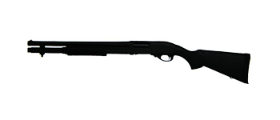Remington Model 870 — помпова рушниця виробництва Remington Arms Company, LLC. Одна з найпоширеніших моделей рушниць в Сполучених Штатах для спортивної стрільби, полювання і самозахисту. Також широко використовується правоохоронними та військовими організаціями по всьому світу.
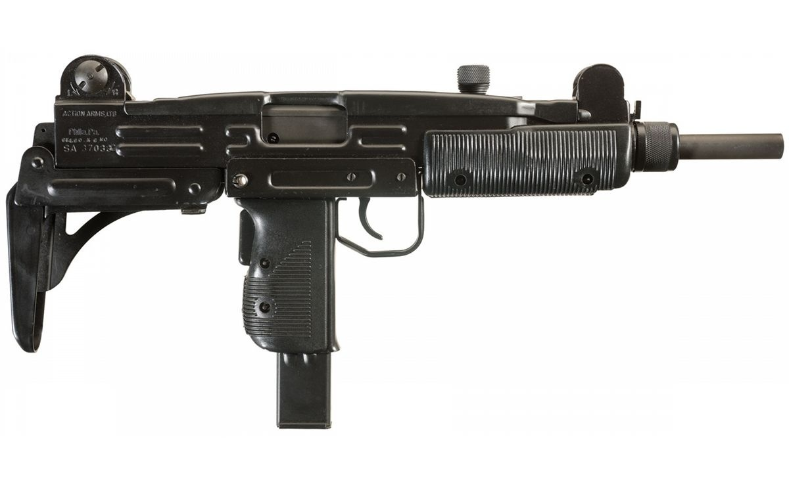Узі (івр. עוזי) — сімейство пістолет-кулеметів, що випускаються ізраїльським концерном Israel Military Industries (IMI). Назва «Узі» було дана на честь конструктора зброї Узіеля Галя.
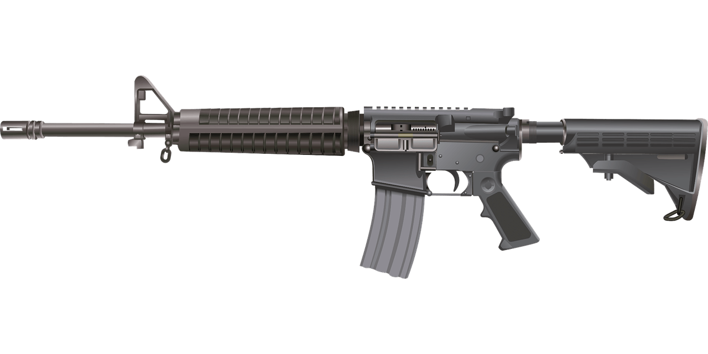Армалайт AR-15 — самозарядна (напівавтоматична) гвинтівка з поворотним затвором та автоматикою на основі відведення газів під набої калібру 5.56 мм. В конструкції використані сплави алюмінію та пластик. Створена американською фірмою ArmaLite для збройних сил США. Через проблеми з фінансами, ArmaLite довелось продати права на гвинтівку фірмі Кольт. Автоматичний варіант AR-15 для збройних сил отримав позначення M16. Починаючи з 1963 року Кольт рекламувала AR-15 як самозарядний варіант військової M16 для цивільних споживачів[8]. Назва «AR-15» досі залишається зареєстрованою торговельною маркою фірми Кольт. Однак, виготовляються аналоги та модифікації під іншим маркуванням сторонніх виробників. Восени 2012 р. стало відомо про плани підприємства «Зброяр» налагодити виробництво AR-10 та AR-15 на київському заводі «Маяк» під назвою MZ-10 та MZ-15 відповідно (MZ можливо свідчить про спільне виробництво Mayak-Zbroyar)[9].
Зброя другої світовой війни

MP-40 (нім. Maschinen Pistole 40-jar — «пістолет-кулемет 40-й рік») — німецький пістолет-кулемет, що був розроблений на початку Другої світової війни та знаходився на озброєнні майже всіх частин Вермахту. За роки війни він став наймасовішою автоматичною стрілецькою зброєю Німеччини.
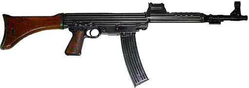Maschinenkarabiner 42 (W) (карабін модель 1942 (Walther)) або MKb 42 (w) - це рання німецька штурмова гвинтівка, розроблена в 1940-41 роках Вальтером під час Другої світової війни . Mkb 42 (W) та більш успішний Maschinenkarabiner 42 (H), розроблений Хаенелом, були попередниками пізнішої штурмової гвинтівки Sturmgewehr 44 або StG 44.>
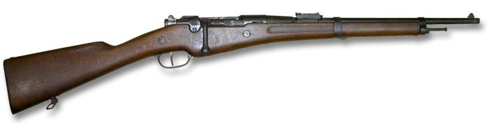Бертьє — сімейство французьких магазинних гвинтівок і карабінів, розроблених конструктором-зброярем А. Бертьє для французької армії наприкінці 1880-х-1900-х роках. Перший дослідний зразок гвинтівки Бертьє був розроблений в 1880 році.
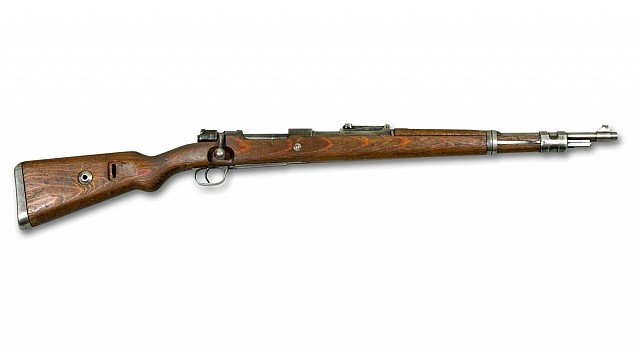Kar98k — магазинна гвинтівка (в німецьких джерелах: «Karabiner 98k», «Mauser 98k» або «K98k»), офіційно прийнята на озброєння в 1935 році. Була основною та найбільш масовою стрілецькою зброєю Вермахту. Конструктивно є укороченою і незначно зміненою модифікацією гвинтівки Mauser 98 зразка 1898 року. Він був коротшим від моделі Karabiner 98b та мав кілька невеликих поліпшень конструкції. Це остання модель в довгому списку зразків, розроблених братами Вільгельмом і Паулем Маузерами в кінці XIX сторіччя, що широко застосовувалися в арміях Європи і Америки.
Високоточна зброя
Високоточна зброя, або високоточне озброєння (англ. Precision-guided munitions) — зброя, як правило керована, здатна вражати ціль першим пострілом (пуском) на будь-якій дальності в межах її досяжності. Відноситься до зброї шостого покоління війн. Дозволяє завдавати дуже точних ударів по атакованих об'єктах. До високоточної зброї відносять різноманітні наземні, авіаційні і корабельні ракетні комплекси, бомбардувальні і артилерійські комплекси керованого озброєння, а також розвідувально-ударні комплекси.
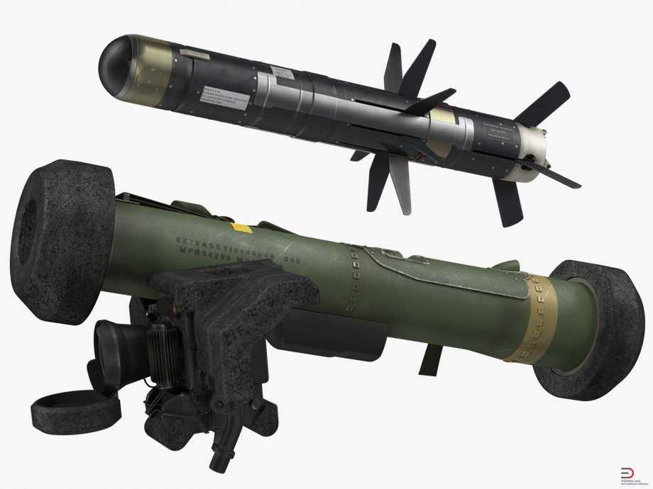FGM-148 Javelin Він призначений для знищення бронетехніки, захищених об'єктів (типу бункер, ДОТ, ДЗОТ) і низьколітаючих малоскоростних цілей (вертольотів). Розроблявся з 1986 року підприємством «Javelin Joint Venture» (Луїсвілл, Техас). Прийнятий на озброєння Армії США в 1996 році. Успішно застосовувався в Іраку. Поставляється на експорт. Вартість однієї протитанкової ракети досягає 50 тис. доларів. Ракета комплексу Javelin оснащена інфрачервоною голівкою самонаведення, що реалізує принцип «вистрілив-забув», тобто самонаведення. Ракета виконана з крилами, що розкриваються за класичною аеродинамічною схемою. Вона здатна атакувати цілі безпосередньо і згори, що дозволяє без особливих зусиль вражати всі сучасні танки. Система «м'якого пуску» дозволяє стріляти із закритих приміщень. Наведення ракети можливо в складних метеоумовах, при підвищеній задимленості і в темний час доби. Ракеті неможливо протидіяти будь-якими засобами оптико-електронного придушення

КАС «Квітник» Керований артилерійський снаряд «Квітник» — це осколково-фугасний боєприпас з лазерною напівактивною голівкою самонаведення, який призначений для оснащення систем ствольної артилерії калібру 152 і/або 155 мм (під стандарти НАТО). Прийнятий на озброєння Збройних сил України 6 грудня 2012 р. Високоточний боєприпас (ВТБ) був розроблений Ніжинським науково-виробничим комплексом «Прогрес» центральним конструкторським та проектно-технологічним бюро «Точність» під керівництвом головного конструктора Миколи Шкарлета. КАС «Квітник» забезпечує ураження танків, пускових ракетних установок, броньованих машин, захисних споруд. Його лазерна напівактивна система наведення дозволяє застосовувати боєприпас не тільки проти бронетехніки, але й проти інших важливих військових об'єктів. Здатний вражати цілі, що рухаються зі швидкістю до 10 м/с (36 км/год) з імовірністю 0,9. 16 таких високоефективних боєприпасів можуть виконати «роботу» 800 звичайних снарядів. Вартість одного снаряда — до 200 тис. грн.>

Х-29 Х-29 (індекс УВ ВВС — 9-А-721, по класифікації МО США НАТО AS-14 Kedge (рос. стоп-анкер)) — радянська / російська високоточна авіаційна ракета класу «повітря-земля» малого радіуса дії. Призначена для знищення укріплених цілей, таких як залізобетонні споруди, мости, бетонні злітно-посадкові смуги, кораблі водотоннажністю до 10 000 тонн і підводні човни у надводному положенні. У розробці брали участь кілька радянських дослідно-конструкторських бюро: НВО «Блискавка» та НВО «Вимпел». Прийнята на озброєння у 1980 році. У даний час виробляється і модернізується корпорацією «Тактичне ракетне озброєння». Виробництво цих ракет також налагоджено в Україні (ДАХК «Артем»)[2]. Є найбільш поширеною ракетою цього класу на літаках радянського / російського виробництва[3].
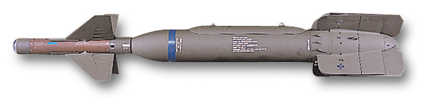GBU-24 Paveway III — американська авіаційна бомба з лазерним наведенням, створена на базі Mk 84, від неї відрізняється наявністю лазерної системи наведення та крилами для коригування траєкторії польоту. GBU-24 відноситься до третього покоління високоточних авіабомб сімейства Paveway[en]. Боєприпас уведений в експлуатацію у 1983 році, нині стоїть на озброєнні військово-повітряних сил США та інших країн НАТО.
Історія створення
Броне техника
Танк — броньована бойова машина на гусеничному шасі, зазвичай з гарматним основним озброєнням. На ранніх етапах розвитку танкобудування іноді випускалися танки з виключно кулеметним озброєнням, а після Другої світової війни експериментували зі створенням танків з ракетним озброєнням. Відомі варіанти танків з вогнеметом. Основною відмінністю танка від інших гусеничних бойових машин з гарматною зброєю є можливість швидко переносити вогонь у широких межах кутів піднесення та горизонтальних кутів. У переважній більшості випадків таку можливість реалізовано за рахунок встановлення гармати на башті, що обертається у горизонтальній площині, хоча є нечисленні винятки (в унікальному шведському танку Strv-103 для наведення гармати використовується поворот і нахил корпуса за допомогою регульованої гідропневматичної підвіски, на перших зразках гармата встановлювалася у спонсонах на бортах корпусу). Самохідна артилерійська установка може бути вельми схожа з танком конструктивно, але призначена для вирішення інших завдань: знищення танків супротивника із засідки чи вогневої підтримки військ з закритої вогневої позиції, а через те має інший баланс броні та озброєння[1].

M1 «Абрамс» (англ. M1 Abrams) — основний бойовий танк третього покоління виробництва Сполучених Штатів. Танк названо на честь генерала Крейтона Абрамса, колишнього начальника штабу Армії США і командувача збройними силами США у В'єтнамі з 1968 по 1972 рік. M1 «Абрамс» є добре озброєною, броньованою, мобільною бойовою машиною, розрахованою на ведення бойових дій у різних умовах сучасних війн та збройних конфліктів[4]. Важливими особливостями танку є застосування потужних газотурбінних двигунів (що працюють на паливі для реактивних двигунів JP8), обладнання бойової машини багатошаровою протиснарядною композитною бронею, і окремим зберіганням боєприпасів в ізольованому капсульному відсіку для відокремлення членів екіпажу з-під удару у випадку влучення снаряду в танк. З вагою, яка коливається залежно від модифікації танку: М1А1 — 57,15 т, М1А2 — до 61,3 т, «Абрамс» є одним з найважчих танків, що знаходяться в експлуатації на початку XXI століття.
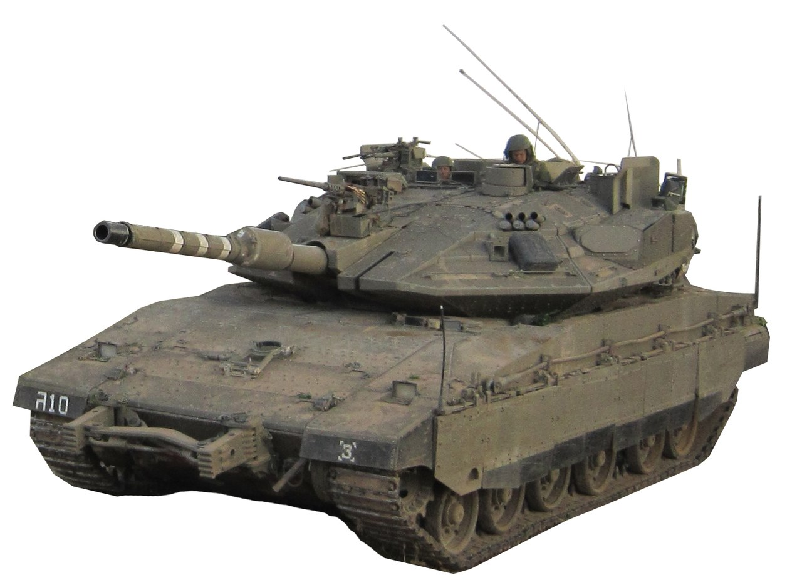Меркава «Меркава» (івр. מרכבה, колісниця) — ізраїльський основний бойовий танк, єдиним оператором якого є Армія оборони Ізраїлю. Серія танків розроблена ізраїльськими спеціалістами, серійно випускається з 1979 року. Розроблено чотири серійні варіації (Меркава 1, 2, 3 та 4). Остання, четверта, генерація танку стоїть на озброєнні ізраїльської армії з 2004 року. Також на шасі «Меркави» розроблено ряд самохідних артилерійських установок. Враховуючи постійні збройні конфлікти Ізраїлю з сусідніми арабськими державами, танки серії «Меркава» встигли взяти участь у бойових діях. Кампанії, в яких брав участь танк: Перша (1982) та Друга (2006) ліванські війни. На базі Меркава IV розробили БМП Namer.
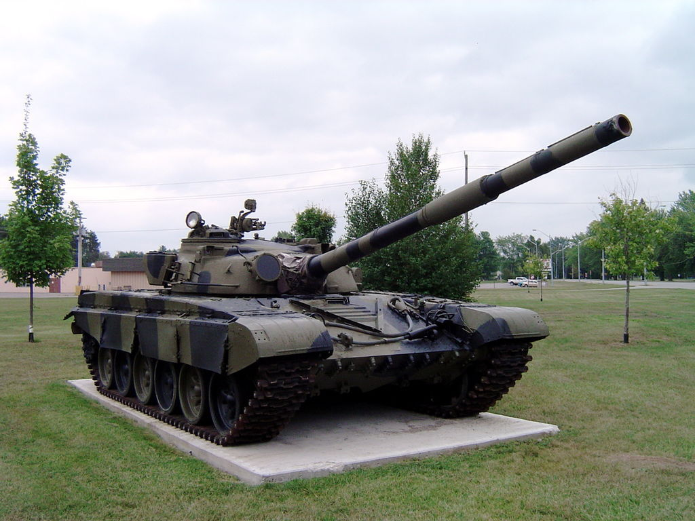Т-72Т-72 «Урал» — основний бойовий танк, розроблений в СРСР. Прийнятий на озброєння радянської армії у 1973 році. За 30 років виробництва виконано 14 основних модифікацій. Танк створений в КБ «Уралвагонзаводу» під керівництвом Леоніда Карцева на основі Т-64А (Об'єкт 434) та мав стати його «мобілізаційним» варіантом — дешевшим та простішим у виробництві.[2] Серед іншого, тут було використано дизельний двигун В-46 (подальший розвиток встановленого на Т-34 двигуна В-2), а також ходову частину Об'єкта 167 (подальший розвиток Т-62)[2]. На відміну від Т-64, який був засекречений, Т-72 широко постачався як до країн Варшавського пакту, так і на експорт за його межі, зокрема в Фінляндію, Індію, Іран, Ірак, Сирію. Досі залишається на озброєнні багатьох країн. Модифікації Т-72 випускалися за ліцензією в Югославії (M-84), Польщі (PT-91), Чехословаччині й Індії, які, у свою чергу, також їх експортували. Завдяки своїй поширеності брав участь в численних військових конфліктах, зокрема, у Лівані (1982), Ірано-іракській війні, Війні у Перській затоці (1991), Югославських війнах, та у війні на сході України.
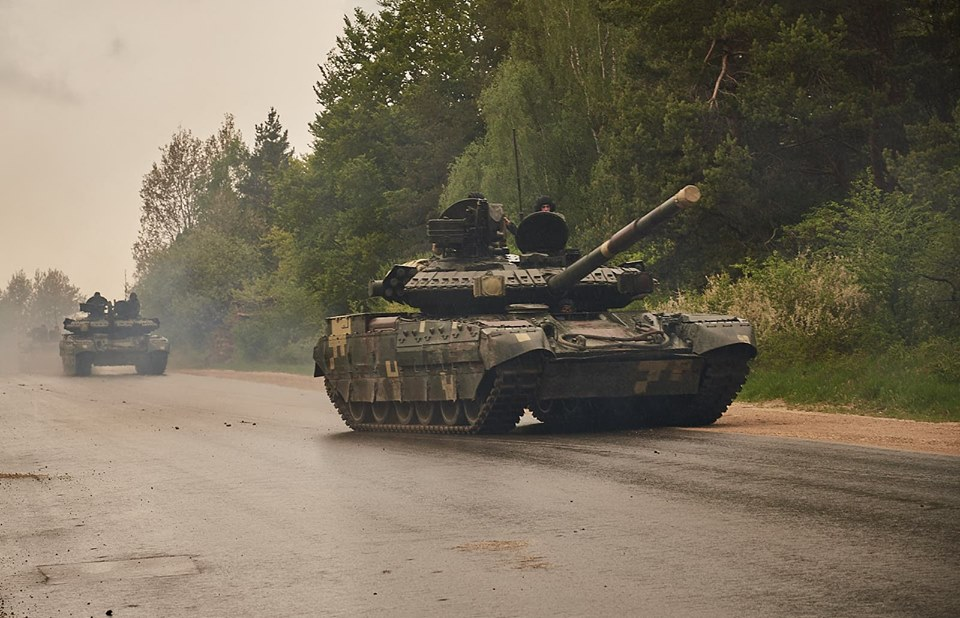Т-84У «Оплот» — український основний бойовий танк, розроблений Харківським конструкторським бюро з машинобудування імені О. О. Морозова на основі танку T-84.Загальне компонування основного бойового танка Оплот — традиційне (відділення управління в носовій частині, бойове відділення — в центрі, а моторно-трансмісійне відділення — у кормовій частині машини). Механік-водій розміщується по центру. Люк механіка-водія при відкриванні піднімається і повертається праворуч. Перед механіком-водієм розташовані три перископні прилади бачення, центральний з яких можна при необхідності замінити на прилад нічного бачення. Позаду сидіння механіка-водія є десантний люк. Командир розміщується праворуч, а навідник — ліворуч, у кожного з них є люк посадки / висадки.